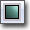

UDN
Search public documentation:
SoundCueEditorUserGuide
日本語訳
中国翻译
한국어
Interested in the Unreal Engine?
Visit the Unreal Technology site.
Looking for jobs and company info?
Check out the Epic games site.
Questions about support via UDN?
Contact the UDN Staff
中国翻译
한국어
Interested in the Unreal Engine?
Visit the Unreal Technology site.
Looking for jobs and company info?
Check out the Epic games site.
Questions about support via UDN?
Contact the UDN Staff
UE3 Home > Audio Home > Unreal Sound Cue Editor User Guide
UE3 Home > Unreal Editor and Tools > Unreal Sound Cue Editor User Guide
UE3 Home > Unreal Editor and Tools > Unreal Sound Cue Editor User Guide
Unreal Sound Cue Editor User Guide
Overview
Opening the Sound Cue Editor
Sound Cue Editor Interface
Menu Bar
Window
- Properties - Toggles display of the Properties Pane.
Tool Bar
| ICON | DESCRIPTION |
|---|---|
|  | Stops playing the sound cue. |
| Plays only the currently selected node in the Audio Node Graph. | |
| Plays the entire sound cue. |
Audio Node Graph
This interface displays the audio signal path from right to left with interconnected block Nodes representing audio control modules and audio files. Virtual patch cables are used to complete the signal patch by connecting the modules in any order or combination. The Speaker icon represents the final output of audio as heard in-game and is always positioned furthest left in signal path. The source audio files (Sound Node Wave) are always positioned furthest right in the signal path. To preview playback use the play buttons located at the top of editor window, the single arrow plays the source Sound Node Wave and the double arrow plays the SoundCues final output. The various audio Nodes can be added by right clicking anywhere in the SoundCue Editors window and selecting desired Node. SoundCue The arrangement created in the SoundCue Editor is saved as a SoundCue. Sound Node Wave A Sound Node Wave is the block representation of an imported audio file in the SoundCue editor. When the desired audio file is selected in the Content Browser's Object window, it can be added to a SoundCue by right clicking anywhere in the SoundCue Editor. Although Sound Node Wave volume and pitch controls exist, they aren't editable in the SoundCue Editor because parameter changes affect other Cues utilizing the same Sound Node Waves. But they are available upon import and in the Group batching system. All Sound Nodes default to Volume 0.75 and Pitch 1.00 Speaker Node The Speaker icon in the SoundCue Editor is the Speaker Node. Clicking on it exposes the Cue Volume + Pitch settings which are used to manage relative Cue volumes. This affects the output of all audio contained within the Cue, if multiple Sound Node Waves are utilized with Mixer or Random Nodes, independent volume and pitch control can be accomplished per layer by adding Modulator Nodes.Properties Pane
Controls
Mouse Controls
Keyboard Controls
Hot Keys
Importing Sounds
- In the Content Browser use filter to make sure SoundCues are visible.
- Select Import button at the bottom left corner of the Content Browser or Import at the top of the context menu that appears on right-clicking the empty space in the Content Browser.
- The Import dialog opens; locate audio files for importing and select Open to add files.
- The Import Property dialog opens. Enter the following information:
- Package - name of package.
- Group - name of group, groups are used for organization and batch control.
- Name - name of the audio file.
- Auto Create Cue - if checked import will auto create a SoundCue per audio file.
- Cue Volume - this sets the Speaker Nodes Cue volume.
- Include [Attenuation / Looping / Modulator] Node - if checked import will auto create a SoundCue per file with [Attenuation / Looping / Modulator] Nodes.
- Select OK to adjust properties on individual files upon import; or select OK to All to apply current properties to all imported SoundCues.